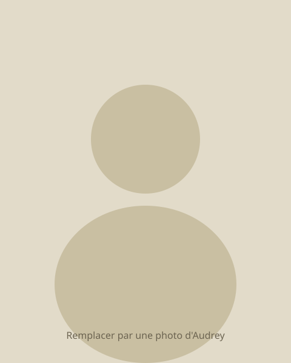

La sophrologie est une méthode de relaxation par la respiration et la conscience du corps, pour se reconnecter à son potentiel et avancer avec plus de clarté.
L'accompagnement propose un cadre et des outils ; le chemin parcouru dépend avant tout de votre engagement et de votre régularité.
Réserver une séanceCe que c'est — ce que ça n'est pas
Ce que c'est
- Des séances individuelles de sophrologie, à domicile ou en visio
- Un accompagnement pour se détendre, se préparer, mieux traverser une période exigeante
- Des séances proposées en créole, sur demande
- Un cadre confidentiel, en petit nombre de places
Ce que ça n'est pas
- Une thérapie ou un soin médical
- Un diagnostic ou une promesse de résultat
- Un complément affiché à un suivi médical en cours
Cet accompagnement relève du développement personnel. Il s'appuie sur la sophrologie, l'hypnose ericksonienne et un travail d'exploration de son histoire personnelle. Il ne remplace ni un suivi médical, ni un suivi psychologique, et n'a pas vocation à s'y substituer.
L'offre — parcours en 8 séances
| Durée | Contenu | Tarif | Paiement | |
|---|---|---|---|---|
| Séance 1 — Anamnèse | jusqu'à 90 min | Anamnèse + première séance | 100 € | Payer cette séance → |
| Séances 2 à 8 (×7) | 60 min | Séance de sophrologie + outils (TAIS et respirations dynamiques inclus) | 70 € chacune | Payer une séance → |
| Parcours complet (8 séances) | 590 € | — | ||
- Pas de séance découverte : l'anamnèse fait partie de la séance 1.
- Séances possibles en créole, sur demande.
- Un support (TAIS + respirations dynamiques) est envoyé après chaque séance, à pratiquer seul entre deux rendez-vous.
- Paiement séance par séance ou en une fois pour le parcours — pas d'engagement imposé sur les 8 séances.
Infos pratiques
Zone géographique
Présentiel dans le 93, 77, 95 et l'Oise (60). Pour les autres départements, réponse par mail selon la distance (visio ou déplacement à évaluer au cas par cas).
Capacité & disponibilité
Nombre de places limité, pour une vraie présence à chacune. Message vocal possible entre les séances, réponse sous 48h ouvrées.
Confidentialité
Les données sont conservées deux ans après la fin de l'accompagnement, sans communication à un tiers.
À propos

Je m'appelle Audrey. Je suis sophrologue.
La sophrologie est entrée dans ma vie à un moment où j'en avais besoin — des épreuves de santé, une rupture, des périodes où le sol semblait moins stable qu'avant. Ce sont d'abord les respirations dynamiques qui m'ont aidée à mettre de la distance avec mes pensées négatives, à rester concentrée sur ce qui comptait vraiment pour moi malgré le bruit intérieur.
J'ai aussi traversé, comme beaucoup, ce sentiment de ne pas être légitime — le syndrome de l'imposteur, qui s'invite toujours au pire moment. La sophrologie m'a donné un espace pour retravailler mon rapport à mon corps, pour désamorcer les pensées limitantes et les pensées parasites qui reviennent en boucle, et pour transformer certains souvenirs difficiles en souvenirs plus légers à porter — sans les effacer, mais en changeant la façon dont ils pèsent, jusqu'à pouvoir y puiser une force plutôt qu'un poids.
C'est cette pratique, éprouvée sur moi-même avant d'être proposée à d'autres, que je mets aujourd'hui à votre disposition.
— Audrey
Contact & réservation
Pour réserver directement une séance :
Réserver une séancePour toute question, notamment hors zone géographique :
Zone géographique
93, 77, 95, Oise (60). Ailleurs, réponse par mail selon la distance.
Délai de réponse
Message vocal entre les séances, réponse sous 48h ouvrées.